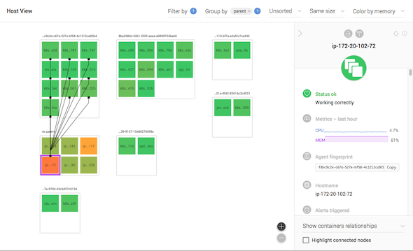
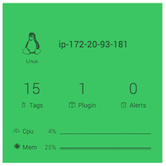
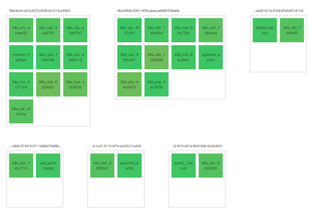
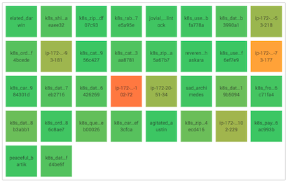

Note
We have recently rebranded and changed our name from Dataloop.IO to Outlyer. Our agent is still called dataloop agent, and relevant code reflects the old name (Dataloop) as well. Thank you for your patience as we update everything.
Using Host View to Visualize Containers and Relationships¶
Host View displays an overview of all the containers and hosts in your account. It has powerful features that let you filter, group, and colorize objects based on criteria you select. Here are some of the things you can do with Host View:
- Show which containers belong to which hosts.
- Visualize which containers are consuming the most CPU or memory.
- Display quick facts at a glance, including: CPU and memory usage, tags and plugins assigned to an object, and running processes.

Getting started with Host View¶
To display the host view, navigate to Status > Host View. The default host view is displayed as a set of colored squares. Each square represents a container or host.
Clicking on one of the colored squares will open a side panel with details about the selected object, including:
- Current status (Connected/disconnected)
- CPU and memory metrics for the past hour
- Hostname and agent fingerprint (for debugging)
- Parent hostname (if the selected object is a container) or containers running on this host (if the selected object is a host)
- Alerts currently being triggered
- Tags assigned to this object
- Plugins configured to collect data on this object
- Processes running on this object
Displaying connections between objects¶
When you select an object, you will see lines connecting this object to its parent or children.
-
If you select a container, Host View will draw a line connecting the container to its host.
-
If you select a host, Host View will draw lines connecting the host to each of its containers.
If you would prefer not to see the connections, change the view setting in the sidebar from "Show container relationships" to "Don't show any connections".
The "highlight connected nodes" checkbox will cause other objects to be grayed out, making it easier to see the connections to the selected object.
Zooming in for more details¶
You can zoom in on sections of the host view to display more details inside each object.

To zoom in on an object:
- Click the zoom in button in the bottom right corner of the Host View.
- Or scroll your mouse wheel to zoom in.
Filtering the view¶
If you have many objects in the Host View, you might prefer to display only a subset. If you select a tag in the "Filter By" view, you will see only the objects that have that tag. For example:
- Select the
container:hosttag to display only hosts, not containers. - Select the
container:idtag to display only containers. - Select the
ec2tag to display only AWS EC2 instances. - Select the
mysqltag to display only objects that have been tagged to run the MySQL plugin.
If you select multiple tags, then only those objects that match ALL of the filters will be displayed.
To remove the filters and display all objects, click the "x" next to the selected filter.
Grouping objects in the view¶
This is one of the most powerful features of Host View. You can use your tags (and additional metadata supplied by Outlyer) to group similar objects together.
A very useful example would be to group your Docker containers with their host, as in the following screenshot.

To group containers by host:
- In the upper right corner of Host View, click .
- Select the
container:parent_idmeta-tag.
You will also see your hosts grouped in the lower-left corner, in a group
called "no container:parent_id". Since hosts do not carry the parent_id tag,
this is where they are placed. If you wanted to remove the hosts from view,
you could add a filter on container:id.
Another example, especially useful in clustered environments, would be to
group by container:image. This will show you how many instances of each
Docker image are running in your environment.
Sorting objects in the view¶
You can sort the objects in view by their name, CPU usage, or memory usage. To sort the view, click the "Unsorted" dropdown in the top right corner of the display and choose one of the options.
Objects will be sorted from left to right, then top to bottom. If you are also grouping objects, then the objects within each group will be sorted.
Colorizing and resizing objects¶
As an alternative to sorting, you can adjust the colors of objects based on their CPU or memory usage. This turns the display into a "heat map" where you can quickly spot problems in your infrastructure.

To change how objects are colorized:
- Click the "color by presence" dropdown list in the upper right corner
of the Host View. - Select either "color by CPU" or "color by memory" as appropriate.
- Choose whether you'd prefer a red/amber/green display or a smooth gradient of colors, and adjust the thresholds as needed.